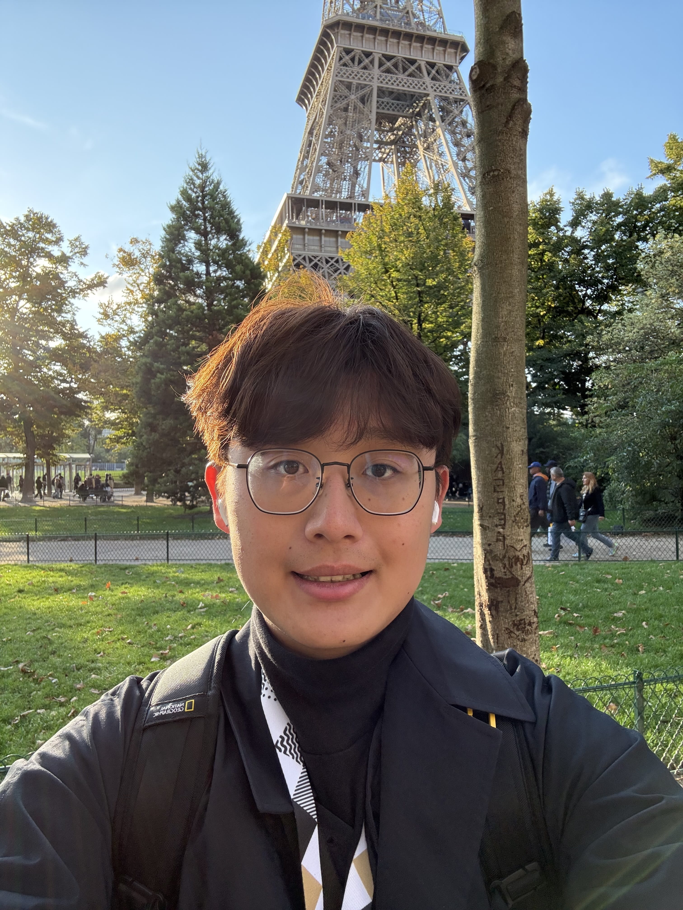

Network systems & architecture
Chung-Yen (Matt) Chiang
M.S. Student, Computer Science and Engineering
My research interests lie in network systems and architecture , with a broad focus on the design of efficient and reliable networked systems.
I work with Prof. KyoungSoo Park in the T-Networking Laboratory . Previously, I spent nearly four years at Amazon’s Connectivity Team building and optimizing wireless systems for IoT devices.

Systems & architecture
Selected work Prior industry work
My industry experience spans wireless networking and embedded systems. Two examples from my work at Amazon:
2.36×Wi-Fi throughput
Amazon · Embedded wireless systems
Improving embedded wireless systems
Improved the performance of an embedded wireless platform, delivering higher throughput for connected devices .
Embedded systems Wireless networking
76%lower reconnection
Amazon · Network reliability
Building more reliable connectivity
Improved connectivity for IoT devices, enabling faster recovery from network interruptions .
Network reliability IoT systems
Publications 01 / Conference paper
CISC 2022 · Taiwan
Chung-Yen Chiang and Nai-Wei Lo
Explores secure connectivity between industrial systems and cloud infrastructure.
Sep 2026 – Present
T-Networking Laboratory · Seoul National University Graduate Researcher · Advisor: Prof. KyoungSoo Park
Research interests in network systems and architecture.
Sep 2022 – Jun 2026
Amazon · Connectivity Team Software Development Engineer II · Previously SDE I and Intern
Built embedded Wi-Fi and BLE systems for IoT devices, with a focus on performance, reliability, and power efficiency.
Roles & further contributions +
SDE II · Apr – Jun 2026: Improved wireless system performance and supported firmware deployment across device variants and regions.SDE I · Aug 2023 – Mar 2026: Improved wireless reliability, responsiveness, and power efficiency; developed secure device provisioning.Intern · Sep 2022 – Jul 2023: Developed automation to support device interoperability across commercial Wi-Fi routers.
Jul – Aug 2022
Academia Sinica · Institute of Information Science Summer Research Intern · Advisor: Meng Chang Chen
Worked on security systems and malware analysis, contributing to a sandbox-based analysis framework.
Jul 2021 – Feb 2022
National Taiwan University of Science and Technology Undergraduate Researcher · Advisor: Prof. Nai-Wei Lo
Studied secure networked systems for industrial and cloud environments. First-author paper at CISC 2022 .
Education & background
Seoul National University M.S. in Computer Science and Engineering
2026 – 2028 (expected)
National Taiwan University of Science and Technology B.B.A. in Information Management · GPA 4.01 / 4.30
2019 – 2023
Honors & technical background +
Honors MOST Undergraduate Research Scholarship
Academic Excellence Award
Technical background Systems
Programming
Tools
Languages
Teaching
Fall 2026
System Programming Teaching Assistant · Computer Science and Engineering, Seoul National University
Lead lab sessions, answer student questions, hold TA office hours, and grade exams.
Fall 2022
Cybersecurity and AI-based Analytics Teaching Assistant · Department of Electrical Engineering, NTUST
Supported office hours, grading, hands-on labs, and final projects.
Notes on engineering, education, and life. Written primarily in Mandarin.
More writing +
© 2026 Chung-Yen (Matt) Chiang · Updated October 2026 Back to top ↑